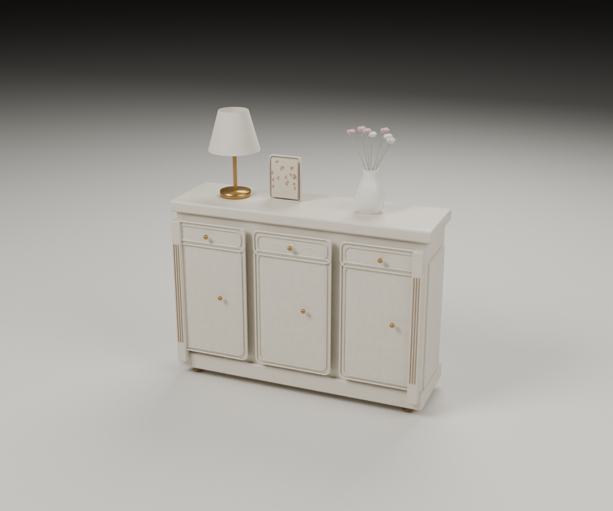
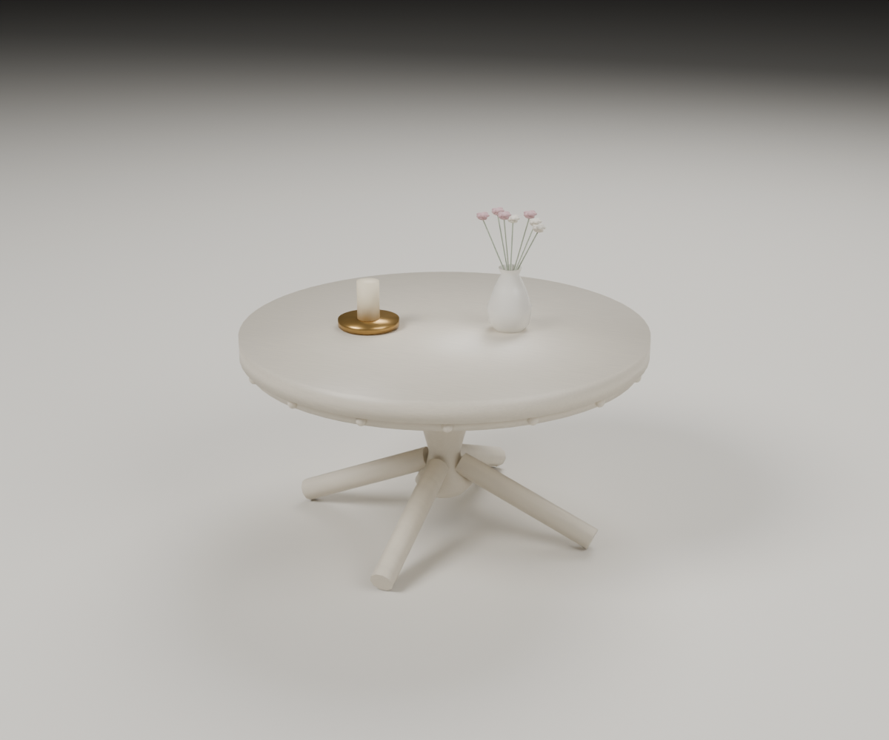
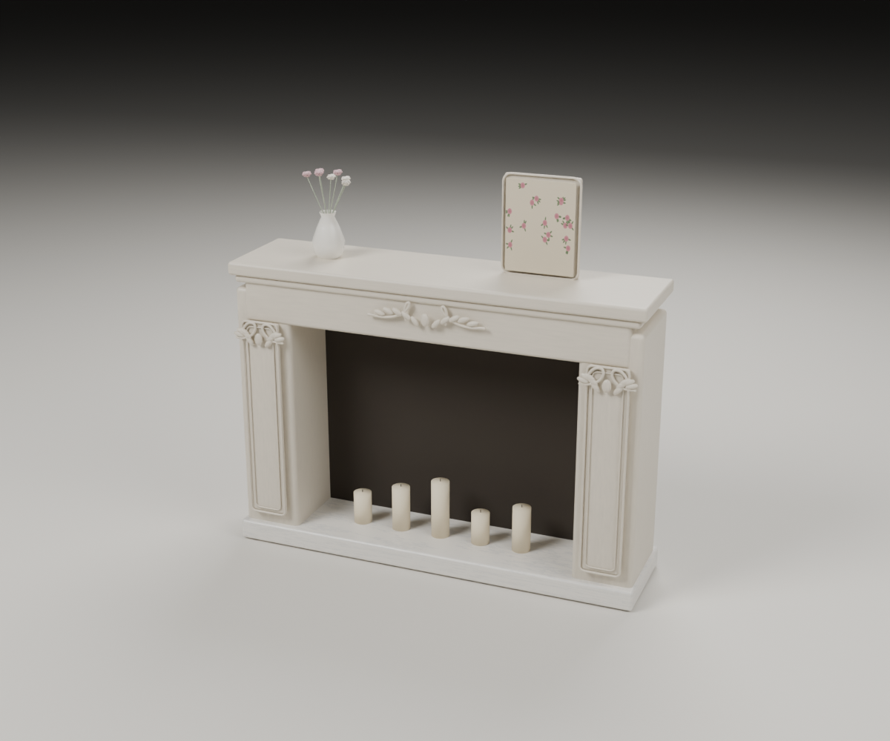
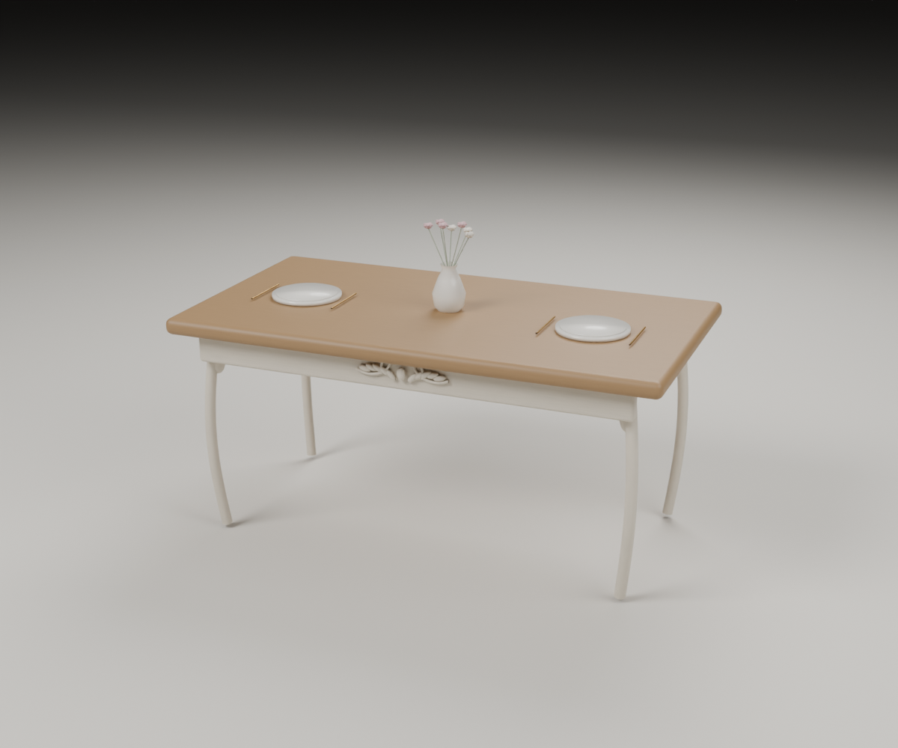
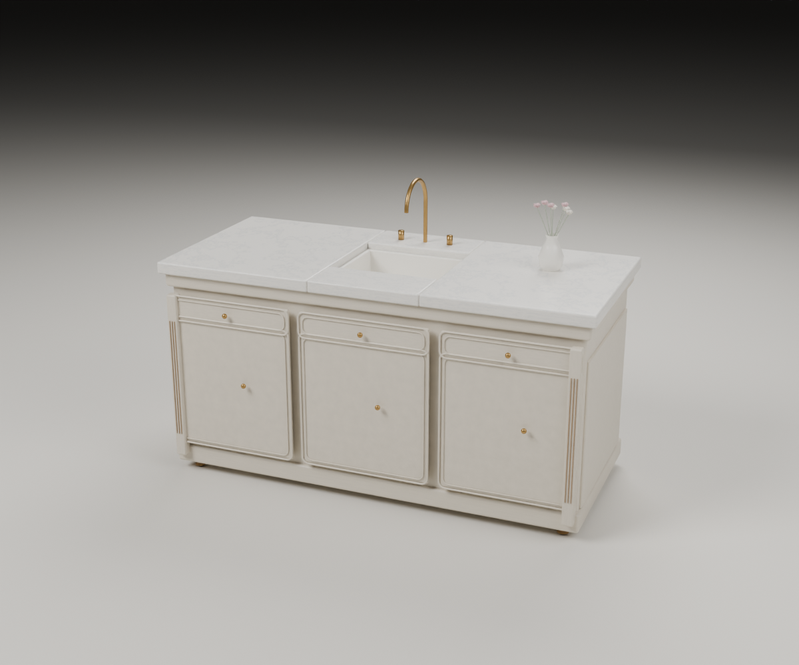
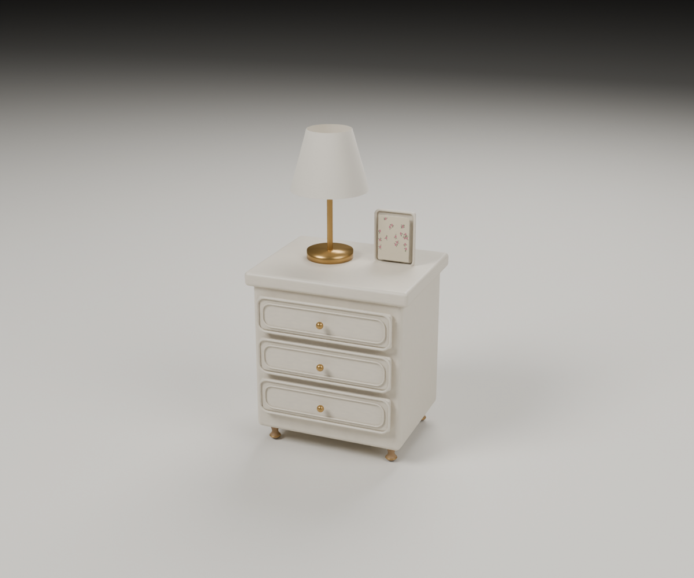
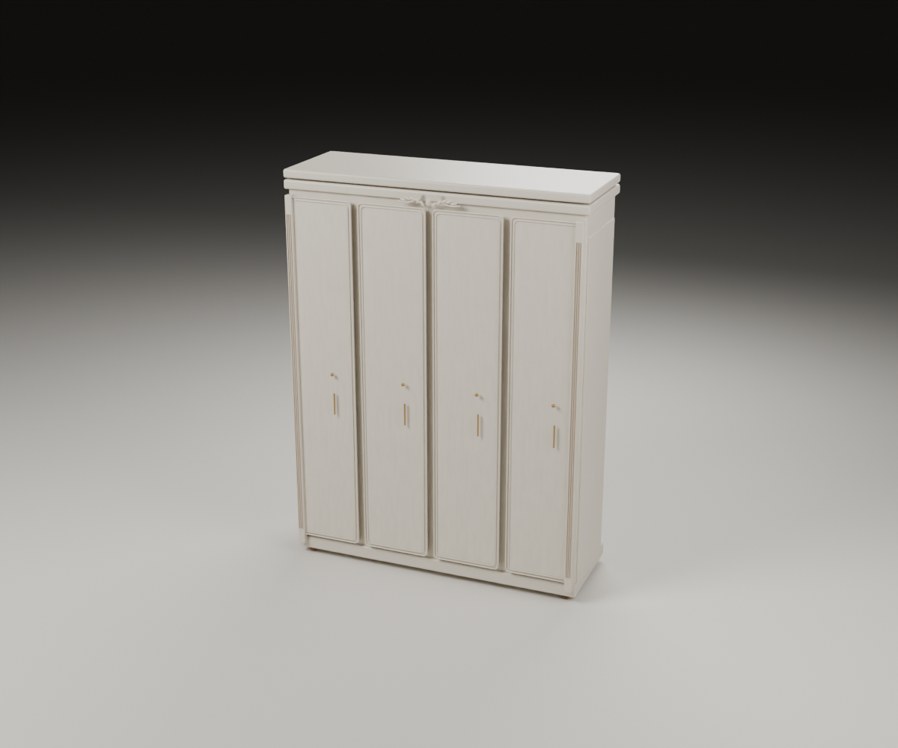
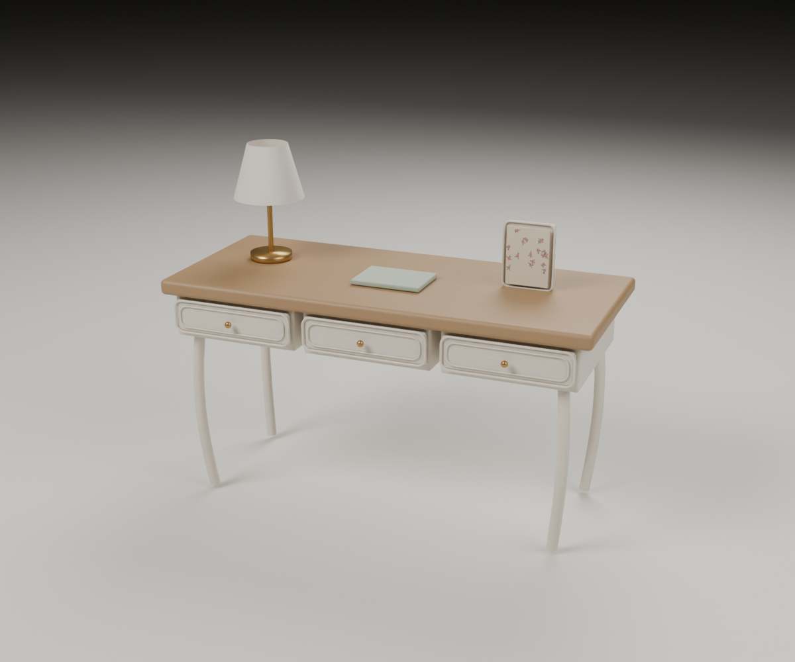
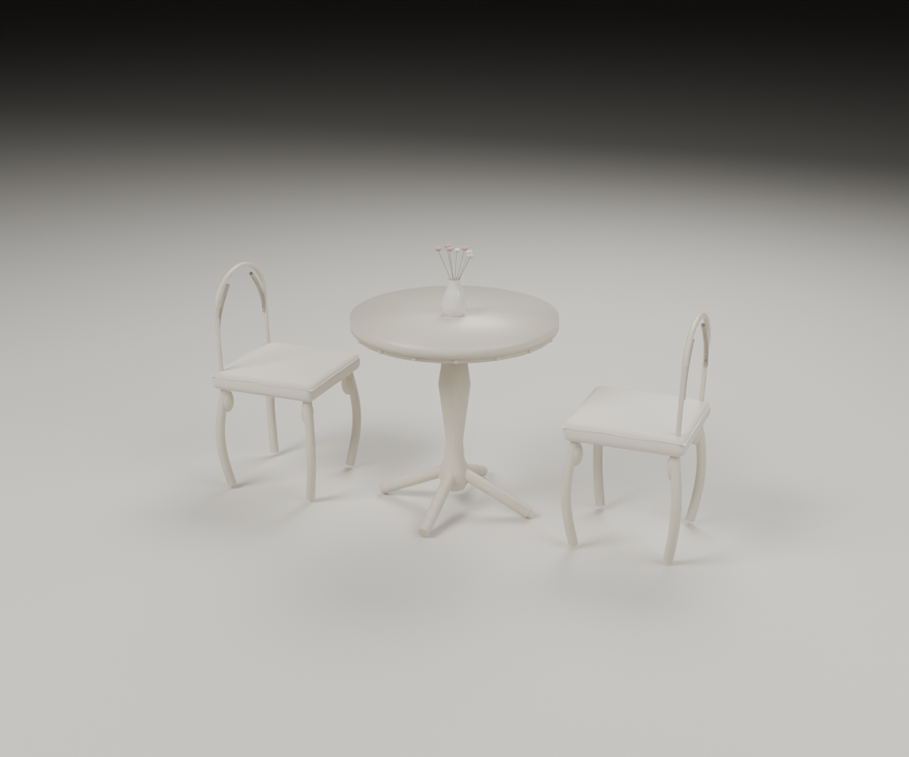
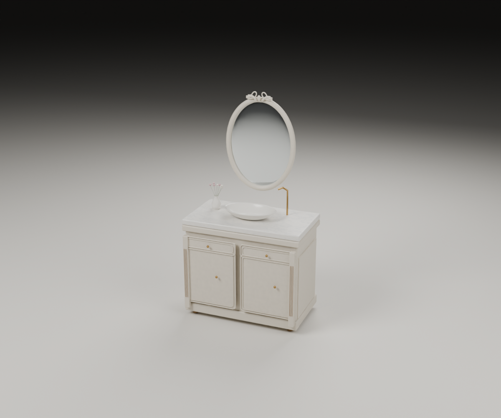

法式家具 · 第二批实际渲染

01 · 玄关柜120 × 35 × 85 cm · 三门、抽屉、黄铜把手

02 · 圆茶几直径 80 × 高 42 cm · 象牙白雕饰

03 · 壁炉柜140 × 35 × 100 cm · 卷叶雕饰、石材炉台

04 · 餐桌160 × 85 × 75 cm · 木质桌面、弯腿

05 · 厨房岛台180 × 80 × 92 cm · 开口水槽、黄铜龙头

06 · 床头柜50 × 40 × 55 cm · 三抽屉、台灯

07 · 四门衣柜180 × 60 × 240 cm · 线板门、装饰檐口

08 · 书桌140 × 60 × 75 cm · 抽屉、白色曲线桌腿

09 · 阳台／温室桌椅圆桌直径 75 × 高 75 cm · 两椅、亚麻坐垫

10 · 浴室柜100 × 55 × 85 cm · 台盆、黄铜龙头、椭圆镜